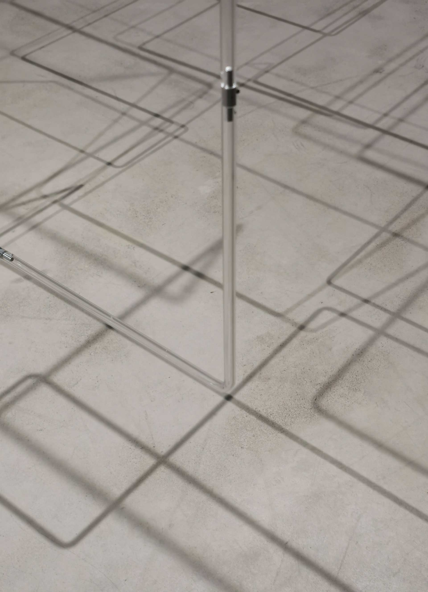

LA BIBI Gallery, Palma
2023
Duo show with Mario Klingemann, curated by Pau Waelder
The new gallery space was divided between us and German artist Mario Klingeman. Although we use very
different working methods and media, we seem to share some underlying interests, which was the starting point
for the curator's work.
For this exhibition we showed completely new works as well as some new site-specific versions of existing
work, made especially for this space. The exhibition included kinetic installation, hanging sculpture,
objects, reliefs, and prints.
Blind Zone
Blind Zone was based on the same principle as our earlier work Blinds Wide Shut (2023). Dark motorized blinds divided our side of the gallery into two parts. The randomly opening and shutting blinds constantly changed the way in which one could see and move from one side to the other.
Linkage
Linkage, a hanging sculpture made of transparent acrylic tubes, was a new work made in Palma de Mallorca during our residency before the exhibition.

Spheres Tomography
In Spheres Tomography interlocking spheres were created inside a layered cubic volume by removing material. The work appears very different when looked at from different angles.
Frozen Sphere
Frozen Sphere is a polished stainless-steel ball filled with frozen gel. It is kept in the freezer overnight and put on display in the morning. The moisture of the surrounding air condensates on its surface as small water droplets and keeps the work in a state of slow change all through the day.
Arranged Randomness
Arranged Randomness is an ongoing series of works in which small stainless-steel balls stick on the wall and on top of each other in a grid pattern, seemingly on their own. This long site-specific version of the work was the second largest so far.
Besides the works mentioned above, we exhibited a relief and a series of prints based on different Moiré patterns. This effect, which is most often considered as a problem or an error, has interested us over the years.